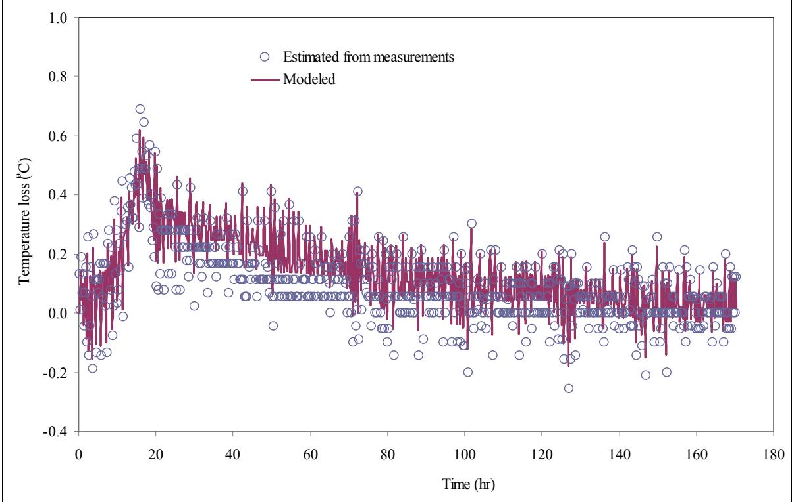
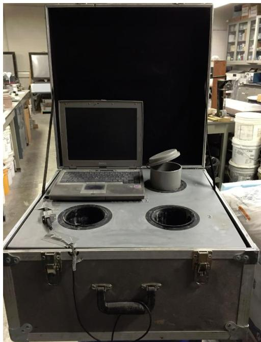
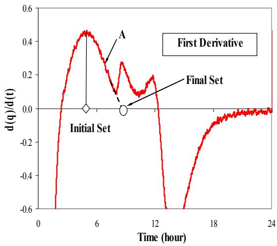
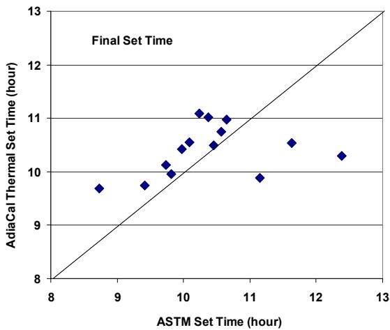

Semi-adiabatic Calorimeter
A semi-adiabatic calorimeter is a testing instrument designed to monitor the heat evolution of cementitious materials during hydration by maintaining an insulated environment that permits a controlled, limited amount of thermal exchange with the surroundings. This methodology occupies an intermediate position between fully adiabatic and isothermal techniques, offering a practical compromise that balances experimental simplicity with sufficient accuracy for characterizing early-age concrete behavior [1] [2] [3] [4]. The device typically consists of an insulated sample chamber equipped with embedded temperature sensors and external data acquisition systems that record the specimen’s thermal history over time [4]. By analyzing the resulting temperature-time curve, engineers can infer critical hydration parameters such as the rate of heat generation, thermal set times, and overall reaction kinetics [5] [6]. Because only a modest fraction of the generated heat escapes, the observed temperature rise can be mathematically related to the total heat of hydration through the sample’s mass and specific heat capacity [4].
This overview of Semi-adiabatic Calorimeter from CP Tech Center reports also covers the following subtopics: Coffee Cup Test and Dewar Test.
Semi-adiabatic calorimeters balance insulation with controlled heat exchange to measure material behavior under realistic thermal conditions. The Coffee Cup Test functions as a semi-adiabatic calorimeter by using an insulated container to monitor temperature changes that reflect the material’s heat evolution while permitting controlled thermal loss. Similarly, the Dewar Test employs an insulated vacuum flask to actively track heat evolution while minimizing thermal loss, thereby fulfilling the semi-adiabatic requirement of maintaining near-equilibrium conditions through controlled containment.
Sources (9)
Sub-concepts (2)
Key findings
- Semi-adiabatic calorimetry provided a practical compromise between laboratory precision and field affordability, yielding temperature rises only slightly lower than true adiabatic results while remaining significantly less costly [1].
- The method demonstrated high repeatability with channel-to-channel variation under five percent, allowing it to clearly distinguish heat evolution differences among mortars with varying binders or curing regimes [2].
- Heat indexes derived from the calorimeter curves reliably characterized mortar behavior and predicted both set time and early-age strength up to two days [2].
- When coupled with pavement performance software, semi-adiabatic data provided a practical means for assessing thermal-cracking risk in field concrete [2].
- Semi-adiabatic calorimeters estimated concrete setting times within a few tenths of an hour of standard ASTM C403 results, with average deviations of about half an hour for initial set [4].
- Hydration curve parameters extracted from semi-adiabatic tests produced simulated in-situ pavement temperatures with higher accuracy than those derived from isothermal test data [4].
- Early-age heat evolution was strongly affected by the initial mix temperature and specific cementitious constituents, producing peak temperatures that varied significantly based on mix reactivity [7].
- The integrated area under the heat signature curve served as a proxy for early strength development, indicating one-day strength gain [7].
Operational Framework and Standardization
Evidence: 8 reports (7 primary)
Semi-adiabatic calorimetry is a testing technique that monitors the heat evolution of cementitious materials during hydration by allowing a small, controlled amount of heat to escape to the surroundings [3]. This approach serves as a practical compromise between ideal adiabatic and isothermal methods, offering a simpler and more field-compatible means to obtain thermal fingerprints without the complexity or cost of perfect insulation or active temperature control [1] [2]. The method relies on measuring the temperature rise within an insulated vessel and using the sample’s mass and specific heat capacity to back-calculate the total heat generated and infer key hydration milestones such as set times and reaction rates [6] [4].
The figure below illustrates the relationship between calculated temperature losses and their corresponding measurement estimations.

Comparison of modeled versus measured temperature loss over time. [4]The figure plots the calculated temperature losses against measurement estimations to validate a heat balance model for cement hydration. It displays the temporal evolution of thermal exchange, showing how heat released to the surrounding environment through calorimeter conduction is tracked during the semi-adiabatic test. The graph demonstrates that the modeled results track closely with the estimated measurements, confirming the accuracy of determining semi-adiabatic temperature.
Research problem — The field lacks a universally accepted, non-proprietary standard for conducting semi-adiabatic calorimetry and interpreting its heat-evolution curves, which prevents reliable comparison of results across laboratories and hinders the translation of laboratory data to field performance [2] [3]. Existing protocols are often impractical for on-site use due to high equipment costs, complex procedures, and excessive duration, creating a gap in affordable methods capable of monitoring hydration kinetics during active construction [1]. The inherent heat-loss characteristics of semi-adiabatic devices cause measured temperature histories to vary significantly with ambient conditions rather than solely reflecting cement hydration, undermining the repeatability required for precise quality control [4].
State of the art — Semi-adiabatic calorimetry is now the prevailing practical approach for monitoring concrete heat evolution, serving as a field-deployable compromise between fully adiabatic laboratory rigs and simple rapid tests [1]. The operational framework is currently transitioning from experimental prototypes to standardized practice through the development of AASHTO specifications and ASTM test procedures, alongside the codification of calibration protocols and heat-evolution indices for quality control [1] [3]. Current consensus establishes semi-adiabatic data as the preferred input for mechanistic pavement design models like HIPERPAV, with ongoing efforts focused on validating performance-based specifications through inter-laboratory comparisons and field trials [3] [4].
The following figure illustrates the validation of these models by comparing predicted pavement temperatures against field measurements.
 Predicted pavement temperatures versus measurements (pavement top, Alma Center, WI) [4]
Predicted pavement temperatures versus measurements (pavement top, Alma Center, WI) [4]
The figure displays a time-series plot comparing measured pavement surface temperatures against two predicted temperature profiles over several days. The data includes ‘Measured Top’ points alongside curves for ‘Isothermal Predicted Top’ and ‘Adiabatic Predicted Top’. The predicted temperatures using both the hydration curve parameters back-calculated from isothermal tests and semi-adiabatic tests are presented the figure–100. The figures show hydration curve parameters generated from semi-adiabatic test data better match actual pavement temperatures than the curves generated by the isothermal test data.
Findings from the reports
- Heat-index analysis derived from semi-adiabatic tests correlated linearly with ASTM C403 set-time results and effectively predicted early-age strength up to two days [2] [4].
- The technique reliably flagged material incompatibilities and batch-to-batch changes, reducing the risk of unexpected performance at the plant or on-site [2] [7].
- Test results showed strong sensitivity to placement temperature, with higher initial temperatures producing larger peak rates and earlier peaks while delaying set times at lower temperatures [7] [4].
- The method produced variable initial-set time estimates depending on the calculation fraction used, with some studies showing weak correlation to ultrasonic pulse-velocity results while others showed close agreement [5] [6].
- Semi-adiabatic calorimetry yielded temperature-rise curves only a few percent lower than true adiabatic results, confirming its reliability for predicting concrete hydration behavior [1].
- The method filled the gap between costly laboratory methods and field needs by providing a rapid, inexpensive tool that balances ruggedness with precision for on-site quality control [1].
- Hydration-curve parameters extracted from semi-adiabatic data improved the fidelity of early-age pavement temperature predictions in simulation models compared with isothermal parameters [4].
- Internal curing increased heat evolution and retained higher temperatures compared to conventional mixes, supporting observed improvements in strength and mechanical properties [8].
Novelty & rigor — The field is transitioning from isolated laboratory procedures to a standardized operational framework that enables routine, cost-effective semi-adiabatic calorimetry for both on-site quality control and laboratory analysis [3] [4]. Novelty in this domain centers on the development of non-proprietary, performance-based specifications that define acceptable measurement tolerances rather than rigid hardware constraints, thereby bridging the gap between expensive laboratory instruments and practical field deployment [1] [3]. Reproducibility is achieved through emerging test protocols that mandate specific mixing standards, calibrated sensor arrays, and heat-loss factors, ensuring that portable devices can yield data comparable to benchmark laboratory results [2] [3].
The figure below illustrates the repeatability of calorimeter tests performed by a single operator across multiple sessions.
 Repeatability of calorimeter tests performed by a given operator at different times [2]
Repeatability of calorimeter tests performed by a given operator at different times [2]
The figure displays the rate of heat generation over time for two separate test runs, demonstrating that the thermal evolution curves are nearly identical. This visual evidence supports the conclusion that the semi-adiabatic calorimeter test is repeatable and suitable for monitoring cement hydration processes.
Reported values
| Parameter | Value | Context | Source |
|---|---|---|---|
| feedback time | 12 to 48 hours | simple, inexpensive devices for heat evolution tests (Dewar, coffee cup, sprayed-foam basket) | [1] |
| maximum heat loss | 100 J/(h⋅K) | semi-adiabatic calorimeter specification | [1] |
| temperature rise difference | 2%–3% | mean temperature rises relative to adiabatic tests | [1] |
| monitoring duration | 72 hours | concrete mixtures hydration monitoring | [8] |
| variation among testing channels | 10.5% | largest variation among testing channels | [2] |
| variation among testing channels | 6%–7% | most of the variations | [2] |
| initial set time prediction method | 20 percent fraction% | calorimetry curves | [5] |
| final set time deviation | 0.4 hours | comparison between semi-adiabatic calorimetry and ASTM C403 tests | [4] |
| generated heat | 120 BTU/g | cementitious materials after 120 hours | [4] |
| generated heat | 120 BTU/lb | mortar samples at 200 hours | [4] |
| generated heat | 120 BTU/gram | cementitious materials at the time of 150 hours | [4] |
| generated heat | 130 BTU/lb | after 150 hours of hydration | [4] |
| generated heat | 130 BTU/g | cementitious materials at 150 hours | [4] |
| generated heat | 140 BTU/lb | concrete sample at 150 hours | [4] |
| initial set time deviation | 0.5 hours | comparison between semi-adiabatic calorimetry and ASTM C403 tests | [4] |
4 more distinct values omitted here; the full span-verified set is in the quantities sidecar.
The following figure illustrates the calorimetry test device used to measure the heat of hydration of concrete.

Semi-adiabatic calorimeter test device for measuring the heat of hydration of concrete. [5]The image displays a portable semi-adiabatic calorimeter consisting of an insulated case with multiple sample chambers and an external data acquisition system.
Across the reviewed reports, semi-adiabatic calorimetry is established as a practical compromise that bridges the gap between precise but costly laboratory methods and rapid field monitoring by providing reliable estimates of hydration kinetics and set times. While the technique consistently captures bulk heat evolution and correlates well with standard set-time measurements in controlled or specific field contexts, its accuracy is intrinsically linked to ambient placement temperatures, which introduces variability that limits its suitability for stringent quality-control regimes without careful calibration. The operational framework relies on extracting heat-index parameters from temperature curves to predict early-age strength and thermal cracking risk, yet the lack of a universal standard for interpreting these curves necessitates balancing device ruggedness with precision through performance-based specifications rather than prescriptive designs. [1] [2] [6] [4]
The following figure illustrates how set times are determined from these characteristic heat evolution curves.

Determination of set times from heat evolution curve [4]The figure displays a plot of the first derivative of a thermal parameter against time, showing distinct peaks and troughs that correspond to specific hydration events.
Implications — Industry standards bodies must codify performance-based specifications for calibration, tolerances, and interpretation indices to enable the routine field deployment of affordable semi-adiabatic calorimeters [1]. Predictive modeling software should be updated to accept user-defined semi-adiabatic inputs as primary hydration parameters, provided that protocols incorporate strict temperature control measures to mitigate ambient variability [4]. Interpretation procedures for thermal setting markers must be standardized across different mixture designs, particularly those with high supplementary cementitious material content, to ensure reliable correlation with actual set times and critical construction schedules [5] [6].
The following figure illustrates the correlation between ASTM-defined set times and those measured by the AdiaCal device during a field study.

ASTM set time vs. AdiaCal thermal set time from US 71 (Atlantic, IA) field study (Initial thermal set—17% and 14% fraction for two AdiaCal, respectively; Final thermal set—50% fraction for both AdiaCal) [4]The figure displays a scatter plot comparing ASTM Set Time against AdiaCal Thermal Set Time, with data points clustered around the diagonal line of equality.
Limitations — The absence of industry consensus on interpreting heat-evolution curves leaves practitioners without standardized guidance for analysis [1]. Predictive models often rely on assumptions regarding uniform temperature distribution and single calibration fractions that lack robust validation across diverse mix compositions [5] [4]. The technique cannot serve as a standalone performance assessment because it fails to capture critical parameters such as the air-void system and is highly sensitive to ambient conditions that vary in field applications [7] [6].
The following figure illustrates the characterization of a typical heat evolution curve.
 Characterization of a typical heat evolution curve [1]
Characterization of a typical heat evolution curve [1]
The figure displays a temperature-time plot showing the thermal history of a cementitious material, highlighting key parameters such as the turning point ($t_0$), maximum temperature ($T_{max}$), and time to reach that peak ($t_{max}$). The curve is further defined by the initial slope ($S_1$) representing early heat generation, the cooling slope ($S_2$), and the total area under the curve (A).
Thermodynamic Principles and Hydration Kinetics
Evidence: 2 reports (2 primary)
The hydration of cementitious materials is an exothermic process that releases heat as chemical reactions proceed, with the rate of this evolution serving as a primary indicator of reaction kinetics. Thermodynamic principles govern the energy balance within these systems, where the total heat released correlates directly with the extent of hydration and the formation of reaction products. In semi-adiabatic conditions, the system approximates adiabatic behavior by maintaining a near-constant ambient temperature through active thermal control, allowing for the precise measurement of heat flow without significant loss to the surroundings [9].
Findings from the reports
- Evaluated early-age temperature rise in ternary cementitious mixtures using a commercial semi-adiabatic calorimeter, revealing that peak temperatures and the time required to reach those peaks varied significantly based on the specific cement system and initial ambient conditions [7].
- Demonstrated that the area under the heat-evolution curve recorded by the calorimeter correlated with one-day strength development in the tested mixtures [7].
- Observed that rapid-set cement produced an immediate sharp heat peak without a dormant period, whereas the addition of latex did not noticeably alter the rate or cumulative heat evolution curves [9].
- Found that citric acid introduced a pronounced dormant period and delayed the heat peak in rapid-set cement, followed by a surge in heat evolution that reached approximately twice that of conventional pavement cement after five to ten hours [9].
Across the reviewed reports, semi-adiabatic calorimetry demonstrates that hydration kinetics are governed by a complex interplay between initial thermal conditions and chemical composition, where start temperatures significantly influence peak-to-initial ratios while specific admixtures can fundamentally alter heat evolution profiles. The collective evidence indicates that thermodynamic signatures vary from gradual temperature rises dependent on ambient start conditions to sharp, chemically controlled exothermic events, such as the delayed but intensified heat surge observed with citric acid compared to the immediate peak of rapid-set cement. [7] [9]
Related concepts
In this hierarchy
- Parent: Calorimetry
- Child: Coffee Cup Test
- Child: Dewar Test
Related by shared evidence
- Calorimetry — shares 9 reports
- Cement Hydration — shares 9 reports
- Concrete Materials & Mixtures — shares 8 reports
- CP Tech Center Reports — shares 8 reports
- Heat of Hydration — shares 8 reports
- Adiabatic Calorimeter — shares 7 reports
- Concrete Curing — shares 7 reports
- Supplementary Cementitious Materials — shares 7 reports
Similar topics
- Adiabatic Calorimeter
- Coffee Cup Test
- Calorimetry
- Isothermal Calorimeter
- Heat of Hydration
- Heat Signature
- Heat Index Method
- Dewar Test
References
- K. Wang, Z. Ge, J. Grove, J. M. Ruiz, and R. Rasmussen, "Developing a Simple and Rapid Test for Monitoring the Heat Evolution of Concrete Mixtures (Phase 3)," CTRE, Iowa State University, Ames, IA, Rep. FHWA Project 17 (Phase I), 2006. [Online]. Available: https://www.intrans.iastate.edu/wp-content/uploads/2018/03/CalorimeterReportPhaseIII.pdf
- K. Wang, Z. Ge, J. Grove, J. M. Ruiz, R. Rasmussen, and T. Ferragut, "Simple and Rapid Test for Monitoring the Heat Evolution of Concrete Mixtures, Phase 2," Center for Transportation Research and Education, Ames, IA, 2007. [Online]. Available: https://www.intrans.iastate.edu/wp-content/uploads/2018/03/calorimeter.pdf
- D. Harrington, R. Rasmussen, D. Merritt, T. Cackler, and P. Taylor, "Long-Term Plan for Concrete Pavement Research and Technology—The Concrete Pavement Road Map (Second Generation): Volume II, Tracks (FHWA-HRT-11-070)," National Center for Concrete Pavement Technology, Iowa State University, Ames, IA, 2012. [Online]. Available: https://www.fhwa.dot.gov/publications/research/infrastructure/pavements/pccp/11070/11070.pdf
- K. Wang, J. M. Ruiz, J. Hu, Z. Ge, Q. Xu, J. Grove, and R. Rasmussen, "Simple and Rapid Test for Monitoring the Heat Evolution ..., Phase III," National Concrete Pavement Technology Center, Ames, IA, 2008. [Online]. Available: https://www.intrans.iastate.edu/wp-content/uploads/2018/03/CalorimeterReportPhaseIII.pdf
- X. Wang, P. Taylor, and D. King, "Evaluation of Modified Concrete Mixture Proportions for the City of West Des Moines," National Concrete Pavement Technology Center, Ames, IA, 2016. [Online]. Available: https://www.intrans.iastate.edu/wp-content/uploads/2018/03/WDM_modified_concrete_mixture_proportions_w_cvr.pdf
- P. Taylor and X. Wang, "Comparison of Setting Time Measured Using Ultrasonic Wave Propagation with Saw-Cutting Times on Pavements," National Concrete Pavement Technology Center, Ames, IA, Rep. TR-675, 2015. [Online]. Available: https://www.intrans.iastate.edu/wp-content/uploads/2018/03/PCC_setting_time_and_joint_sawing_w_cvr.pdf
- P. Taylor, P. Tikalsky, K. Wang, G. Fick, and X. Wang, "Development of Performance Properties of Ternary Mixtures: Field Demonstrations and Project Summary," National Concrete Pavement Technology Center, Ames, IA, Rep. TPF-5(117), 2012. [Online]. Available: https://www.intrans.iastate.edu/wp-content/uploads/2018/03/ternary_final_w_cvr.pdf
- A. Daghighi, P. Taylor, H. Ceylan, and Y. Zhang, "Impacts of Internally Cured Concrete Paving on Contraction Joint Spacing Phase II," National Concrete Pavement Technology Center, Iowa State University, Ames, IA, Rep. TR-746, 2021. [Online]. Available: https://www.cptechcenter.org/wp-content/uploads/2021/05/IC_concrete_paving_impacts_phase_II_field_impl_w_cvr.pdf
- K. Wang, B. M. Shankaramurthy, A. Anand, Y. Sargam, K. Freeseman, and B. Phares, "Performance Evaluation of Very Early Strength Latex-Modified Concrete (LMC-VE) Overlay," Institute for Transportation, Iowa State University, Ames, IA, Rep. TR-771, 2024. [Online]. Available: https://bec.iastate.edu/wp-content/uploads/2024/10/performance_evaluation_of_LMC-VE_overlay_w_cvr.pdf
Feedback on this page